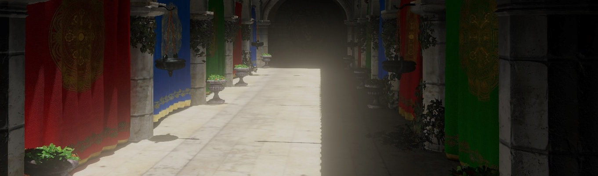

Cascaded Shadow Mapping
Last Updated: 5/5/22
What is Cascaded Shadow Mapping?
Cascaded shadow mapping is a way of addressing limited resolution on shadow maps for directional lights. We can create a normal shadow map for a directional light by fitting an orthographic projection matrix to the view frustum. This allows us to only render a shadow map only for the part of the scene that is visible. However, the view frustum can be quite large. This can lead the resulting shadow map to lack detail due to having a low texel density. We could attempt to solve this problem by increasing the resolution of the shadow map, but to get the visual fideltiy we desire would require an astronomically large shadow map (upwards of 16k). This would use an absurd amount of memory and would take a long time to render every frame. A better solution would be to split our view frustum into several sub-frusta and create several shadow maps for each sub-frusta. These splits are known as cascades, hence the term cascaded shadow mapping.
While learning about cascaded shadow mapping, I came across several very helpful tutorials on the subject. For example, this one on the Learn OpenGL site written by Márton Árbócz was very helpful. However, I felt like it served better as a proof-of-concept and a beginner tutorial than a complete solution, as there were several noticable artifacts with this implementation and didn't quite have the visual fidelity I was looking for. In particular, I noticed two things: the first was that there was an odd shimmering of the shadows. The second was that the transition between cascades was quite obvious and very distracting. As such I mainly want to focus on the improvements I have made to this system: the stabilzation/texel snapping that fixes the former issue and the cascade blending that fixes the latter.
Stabilization and Texel Snapping
The shimmering problem is showcased well in this video by Chetan Jags:
As you can see, as the camera moves the edges of the shadows appear to move which creates very distracting and ugly artifacts. There are two causes of this: the first is that as the camera moves and rotates, the shadow map for an individual cascade that is tightly fitted to the cascade changes in size and rotation depending on the orientation. The second is that if the camera moves in such a way that the shadow map is offset by a fraction of a texel, the change in detail at the edges of the shadow map will cause inconsistent values at the edges. Let's first talk about how to solve the former problem: stablizing the size and rotation.
We can stablize the size of the shadow map by instead of tightly fitting our projection matrix to the cascade, wrapping the cascade in a sphere and then tightly fitting our projection matrix to that instead. This may not be immediately clear how this solves the problem, but this figure (from Michal Valient's article "Stable Rendering of Cascaded Shadow Maps" in ShaderX 6) demonstrates nicely:

As shown in the figure above, instead of re-sizing or re-orienting our maps to tightly fit the sub-frusta, we instead fit the bounding sphere. This has the small drawback of wasting some memory due to overlap, but is very effective at stablizing our final result. The calculation of these bounding spheres is fairly straightforward. Here's a snippet from my implementation in Walker Engine:
BoundingSphere DirectionalLight::CalculateFrustumBoundingSphere(Camera& camera, const float nearPlane, const float farPlane)
{
std::vector<glm::vec4> corners = camera.GetFrustumCornersWorldSpace(glm::perspective(glm::radians(camera.GetZoom()), camera.GetAspectRatio(), nearPlane, farPlane), camera.GetViewMatrix());
glm::vec3 center = glm::vec3(0.0f);
for (const auto& v : corners)
{
center += glm::vec3(v);
}
center /= corners.size();
float radius = 0.0f;
for (uint32_t i = 0; i < 8; i++) {
float distance = glm::length(glm::vec3(corners[i].x, corners[i].y, corners[i].z) - center);
radius = glm::max(radius, distance);
}
radius = std::round(radius * 16.0f) / 16.0f;
BoundingSphere result;
result.FrustumCenter = center;
result.Radius = radius;
return result;
}
Now, onto the second problem: offsets of sub-texel increments. In this scenario, we only want to adjust our shadow maps if the shadow view matrix has changed enough to be offset by at least one pixel. And in this case, we want to snap to a position that is an exact increment of our texel size. We can do this in just a few steps. First, we need to determine our offset from the previous frame in view space. We can do this by subtracting the vector in view space of our "old" sub-frusta bounding sphere from our new one. Then, to determine if this offset is large enough to offset our shadow map by at least one pixel, we have to determine the size of our pixel, i.e. how much space does a pixel represent in view/world space. With that size, we multiply that with our offset, and determine if the resulting offset (in pixels) is greater than half a pixel. If so, we snap to the next largest pixel increment and adjust our cascade's view-projection matrix accordingly. Here's another snippet demonstrating the process I just described:
bool DirectionalLight::CascadeNeedsUpdate(glm::mat4 shadowView, uint32_t cascadeNumber, glm::vec3 newCenter, glm::vec3 oldCenter, float radius, glm::vec3& offset)
{
const glm::vec3 oldCenterViewSpace = glm::vec3(shadowView * glm::vec4(oldCenter, 1.0f));
const glm::vec3 newCenterViewSpace = glm::vec3(shadowView * glm::vec4(newCenter, 1.0f));
const glm::vec3 centerDiff = newCenterViewSpace - oldCenterViewSpace;
const float pixelSize = (float)m_ShadowMapWidth / (2.0f * radius);
const float pixelOffsetX = centerDiff.x * pixelSize;
const float pixelOffsetY = centerDiff.y * pixelSize;
const bool needUpdate = glm::abs(pixelOffsetX) > 0.5f || glm::abs(pixelOffsetY) > 0.5f;
if (needUpdate)
{
offset.x = glm::floor(0.5f + pixelOffsetX) / pixelSize;
offset.y = glm::floor(0.5f + pixelOffsetY) / pixelSize;
offset.z = centerDiff.z;
}
return needUpdate;
}
Results
My full implementation is open source as part of my Walker Engine renderer.